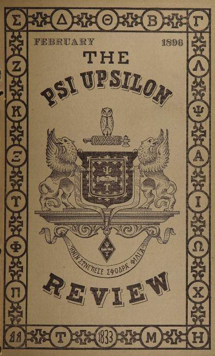
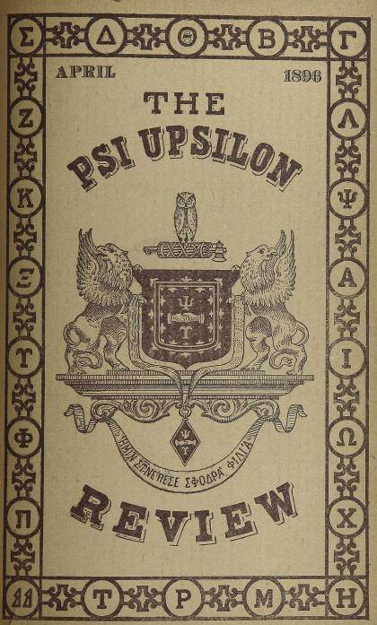
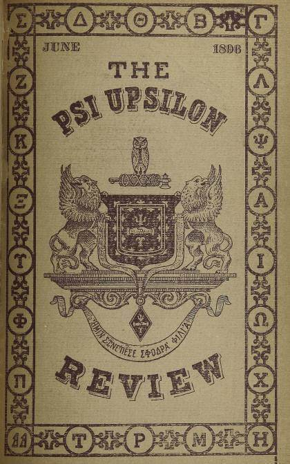

Archives / Collections / The Review
Collection
The Review
A short-lived newsletter published by The Psi Upsilon Review Company of Detroit, 1895-1896.





Collection
A short-lived newsletter published by The Psi Upsilon Review Company of Detroit, 1895-1896.


